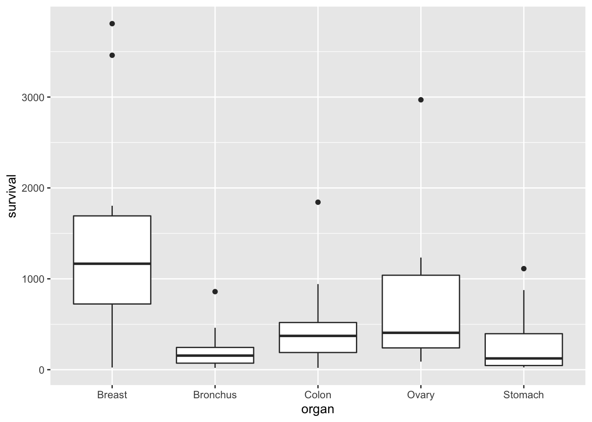
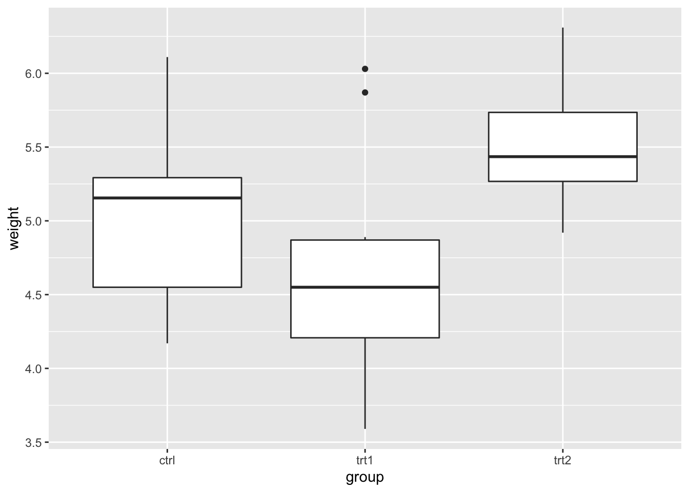

Chapter 10 Qualitative independent variables
10.1 Example: cancer survival data
The file cancer.csv has data from patients with
advanced cancers of the stomach, bronchus, colon, ovary or breast
were treated with ascorbate. We suppose that this aim is to
determine if patient survival differs with respect to the organ
affected by the cancer. The survival time in days was recorded for
each patient.
cancer <- read_csv("cancer.csv")
head(cancer)## # A tibble: 6 × 2
## survival organ
## <dbl> <chr>
## 1 124 Stomach
## 2 42 Stomach
## 3 25 Stomach
## 4 45 Stomach
## 5 412 Stomach
## 6 51 StomachWe can use a box plot to compare the survival times for each type (organ) of cancer patient:
ggplot(cancer, aes(x = organ, y = survival)) +
geom_boxplot()
We suppose that the survival time is the dependent variable of interest, which we can treat as continuous as before. But our independent variable, organ, is qualitative. Can we still use a linear model to analyse these data?
10.2 A linear model for the cancer data
Clearly, it would not make sense to write a model such as \[ Y_i=\beta_0 + \beta_1 x_i +\varepsilon_i, \] where \(Y_i\) is the survival time of the \(i\)-th patient and \(x_i\) is the cancer type of the \(i\)-th patient, because the independent variable (cancer type) is a categorical variable (i.e. it doesn’t make sense to say “survival time \(= 50 +3\times\) stomach cancer”). We could write our model as \[ Y_i= \beta_1 x_{i,1} + \beta_2 x_{i,2}+\beta_3 x_{i,3}+\beta_4 x_{i,4}+\beta_5 x_{i,5} +\varepsilon_i, \] where \(x_{i,j} = 1\) if patient had cancer type \(j\) (\(j=1\) for Breast, \(j=2\) for Bronchus and so on) and \(x_{i,j} = 0\) otherwise. We say that \(x_{i,j}\) is a dummy variable. The five dummy variables here ensure that the correct \(\beta\) term is selected for each observation. This notation can be a little cumbersome, so we typically write these sorts of models in a different way.
10.3 Notation for qualitative independent variables
Each observation is associated with a particular group, where the group is specified by the value (level) of the qualitative independent variable. The organ variable can be one of five possibilities, so we think the data as being organised in five groups.
We write \(Y_{ij}\) as the \(j\)-th observation within group \(i\). Let \(g\) be the total number of groups (with \(g=5\) in the cancer data). We then have \(i=1,\ldots,g\).
Whereas a quantitative independent variable is typically represented by its own letter (e.g. \(x_i\)), we typically represent a qualitative independent variable using an additional subscript on the dependent variable.
Within group \(i\) we let \(n_i\) be the total number of observations, so that we have \(j=1,\ldots,n_i\). In the cancer data, if we call the group of patients with breast cancer group 1, there are 11 patients in this group, so \(n_1=11\), and the 11 survival times for patients with stomach cancer are denoted \(Y_{1,1},Y_{1,2},\ldots,Y_{1,11}\). As usual, we think of \(Y_{ij}\) as a random variable, and \(y_{ij}\) as the observed value of that random variable.
We let \(n\) denote the total number of observations, so that \(n=\sum_{i=1}^g n_i\).
Now let \(\mu_i\) denote the population mean of the dependent variable in group \(i\). We can now write a model for the data as follows: \[ Y_{ij}=\mu_i + \varepsilon_{ij}, \] for \(i=1,\ldots,g\), \(j=1,\ldots,n_i\) and \(\varepsilon_{ij}\sim N(0,\sigma^2)\).
Analysis of data using this model is sometimes referred to as one-way analysis of variance (ANOVA), and we will refer to the above model as the one-way ANOVA model.
10.4 The one-way ANOVA model in matrix form
The model \[ Y_{ij}=\mu_i + \varepsilon_{ij},\] for \(i=1,\ldots,g\), \(j=1,\ldots,n_i\) is written in matrix form as \[ \mathbf{Y} = X\boldsymbol{\beta} + \boldsymbol{\varepsilon}, \] with \[ \mathbf{Y}=\left(\begin{array}{c}Y_{1,1} \\ \vdots \\ Y_{1,n_1} \\ Y_{2,1}\\ \vdots \\ Y_{2,n_2} \\ \vdots \\ Y_{g,1} \\ \vdots \\ Y_{g,n_g}\end{array}\right),\quad X=\left(\begin{array}{ccccc}1& 0 & 0 & \ldots & 0 \\ \vdots & \vdots & \vdots & & \vdots \\ 1& 0 & 0 & \ldots & 0 \\ 0& 1 & 0 & \ldots & 0 \\ \vdots & \vdots & \vdots & & \vdots \\ 0& 1 & 0 & \ldots & 0 \\ \vdots & \vdots & \vdots & & \vdots \\ 0& 0 & 0 & \ldots & 1 \\ \vdots & \vdots & \vdots & & \vdots \\ 0& 0 & 0 & \ldots & 1 \end{array}\right),\quad \boldsymbol{\beta}=\left(\begin{array}{c}\mu_1 \\ \vdots \\ \mu_g\end{array}\right),\quad \boldsymbol{\varepsilon}=\left(\begin{array}{c}\varepsilon_{1,1} \\ \vdots \\ \varepsilon_{1,n_1} \\ \varepsilon_{2,1}\\ \vdots \\ \varepsilon_{2,n_2} \\ \vdots \\ \varepsilon_{g,1} \\ \vdots \\ \varepsilon_{g,n_g}\end{array}\right) \]
10.5 Least squares estimates for the one-way ANOVA model
Now that we have written the model in matrix notation, we can immediately obtain least squares estimates for the unknown group means \(\mu_1,\ldots,\mu_g\), using the formula \(\hat{\boldsymbol{\beta}}=(X^TX)^{-1}X^T\mathbf{y}\). Since \[ (X^TX)^{-1}=\left(\begin{array}{cccc}n_1 & 0 & \ldots & 0 \\ 0 & n_2 & \ldots & 0 \\ \vdots & & \ddots & \vdots \\ 0 & 0 & \ldots & n_g \end{array} \right)^{-1},\quad X^T\mathbf{y}=\left(\begin{array}{c} \sum_{j=1}^{n_1} y_{1,j} \\ \vdots \\ \sum_{j=1}^{n_g} y_{g,j} \end{array}\right) \] we have \[ \hat{\boldsymbol{\beta}}=\left(\begin{array}{c}\hat{\mu}_1 \\ \vdots \\ \hat{\mu}_g \end{array}\right) = \left(\begin{array}{c} \frac{1}{n_1} \sum_{j=1}^{n_1} y_{1,j} \\ \vdots \\ \frac{1}{n_g} \sum_{j=1}^{n_g} y_{g,j} \end{array}\right) \] This result is intuitive. For example, in group 1 we have \(n_1\) observations \(y_{1,1},\ldots,y_{1,n_1}\), all with expected value \(\mu_1\). The obvious estimate for \(\mu_1\) is the sample mean \(\frac{1}{n_1} \sum_{j=1}^{n_1} y_{1,j}\).
10.6 Fitting a one-way ANOVA model in R
We fit the model \[ Y_{ij}=\mu_i + \varepsilon_{ij},\] for \(i=1,\ldots,g\), \(j=1,\ldots,n_i\) to the cancer data as follows.
lmCancer <- lm(survival ~ organ - 1, cancer)(the reason for the - 1 in the formula will become clearer shortly, when we look at an alternative parametrisation of the model.)
We can now use the summary() command to get the parameter estimates
summary(lmCancer)##
## Call:
## lm(formula = survival ~ organ - 1, data = cancer)
##
## Residuals:
## Min 1Q Median 3Q Max
## -1371.91 -241.75 -111.50 87.19 2412.09
##
## Coefficients:
## Estimate Std. Error t value Pr(>|t|)
## organBreast 1395.9 201.9 6.915 3.77e-09 ***
## organBronchus 211.6 162.4 1.303 0.19764
## organColon 457.4 162.4 2.817 0.00659 **
## organOvary 884.3 273.3 3.235 0.00199 **
## organStomach 286.0 185.7 1.540 0.12887
## ---
## Signif. codes: 0 '***' 0.001 '**' 0.01 '*' 0.05 '.' 0.1 ' ' 1
##
## Residual standard error: 669.5 on 59 degrees of freedom
## Multiple R-squared: 0.5437, Adjusted R-squared: 0.505
## F-statistic: 14.06 on 5 and 59 DF, p-value: 4.766e-09We have \(\hat{\beta}_1 = 1395.9\), \(\hat{\beta}_2 = 211.6\) and so on.
Note that this model does not have an intercept, so the F-statstic and p-value in the last line report a hypothesis test of \(H_0: \beta_i = 0\) for \(i=1,\ldots,5\), with \(H_A:\beta_i \neq 0\) for at least one \(i\).
10.7 An alternative parameterisation
None of the hypothesis tests in the summary() output above are likely to be of any interest; we are more likely to be interested in differences between groups, rather than whether some or all of the groups have a population mean response of 0.
An alternative way of writing the one-way ANOVA model is as follows: \[ Y_{i,j}=\mu + \tau_i + \varepsilon_{i,j}, \] for \(i=1,\ldots,g\), \(j=1,\ldots,n_i\) and with \(\varepsilon_{i,j}\sim N(0,\sigma^2)\).
The intention of this parametrisation could be to think of \(\mu\) as the grand mean, and \(\tau_i\) as the difference between the mean of group \(i\) and the grand mean \(\mu\). However, this model is over-parametrised.
In matrix notation, we would write this as \[ \mathbf{Y} = X\boldsymbol{\beta} + \boldsymbol{\varepsilon}, \] with \[ \mathbf{Y}=\left(\begin{array}{c}Y_{1,1} \\ \vdots \\ Y_{1,n_1} \\ Y_{2,1}\\ \vdots \\ Y_{2,n_2} \\ \vdots \\ Y_{g,1} \\ \vdots \\ Y_{g,n_g}\end{array}\right),\quad X=\left(\begin{array}{cccccc}1&1& 0 & 0 & \ldots & 0 \\ \vdots & \vdots & \vdots & \vdots & & \vdots \\ 1& 1& 0 & 0 & \ldots & 0 \\ 1 & 0& 1 & 0 & \ldots & 0 \\ \vdots & \vdots & \vdots & \vdots & & \vdots \\ 1 & 0& 1 & 0 & \ldots & 0 \\ \vdots & \vdots & \vdots & \vdots & & \vdots \\ 1 & 0& 0 & 0 & \ldots & 1 \\ \vdots & \vdots & \vdots & \vdots & & \vdots \\ 1 & 0& 0 & 0 & \ldots & 1 \end{array}\right),\quad \boldsymbol{\beta}=\left(\begin{array}{c}\mu \\\tau_1 \\ \vdots \\ \tau_g\end{array}\right),\quad \boldsymbol{\varepsilon}=\left(\begin{array}{c}\varepsilon{1,1} \\ \vdots \\ \varepsilon{1,n_1} \\ \varepsilon{2,1}\\ \vdots \\ \varepsilon{2,n_2} \\ \vdots \\ \varepsilon{g,1} \\ \vdots \\ \varepsilon{g,n_g}\end{array}\right). \] For this particular design matrix \(X\), we find that \[ X^TX=\left(\begin{array}{ccccc}n & n_1 & n_2 & \cdots & n_g \\ n_1 & n_1 & 0 & \cdots & 0\\ n_2 & 0 & n_2 & \cdots & 0 \\ \vdots & \vdots &\vdots & \ddots & \vdots \\ n_g & 0 & 0 & \cdots & n_g \end{array}\right). \] The matrix \(X^TX\) cannot be inverted, as \(\det(X^TX)=0\) (the first column is the sum of columns 2 to \(g+1\), noting that \(\sum_{i=1}^g n_i=n\)). Hence it is not possible to obtain least squares parameter estimates for this model, as we cannot evaluate the expression \(\boldsymbol{\beta}=(X^TX)^{-1}X^T\mathbf{y}\). Intuitively, this makes sense as we are trying to estimate \(g+1\) parameters representing group means (\(\mu\) and \(\tau_1,\ldots,\tau_g\)) with data from only \(g\) groups.The solution is to apply constraints to the parameters. One possibility is to state that \(\tau_1=0\), so that the model can be written as \[ Y_{i,j}=\left\{\begin{array}{ll}\mu + \varepsilon_{1,j} & \mbox{$i=1$, $j=1,\ldots n_1$}\\ \mu + \tau_i + \varepsilon_{i,j} & \mbox{$i=2,\ldots,g$, $j=1,\ldots n_i$} \end{array}\right. \] For this parametrisation, \(\mu\) is interpreted as the (population) mean for group 1, and \(\tau_i\) gives the difference in means between group \(i\) and group 1, for \(i\neq 1\). The null hypothesis of no difference between group means is written as \[ H_0:\tau_2=\ldots=\tau_g=0, \] and any individual \(\tau_i=0\) implies no difference in means between groups \(i\) and 1. This model is written in matrix form as \[ \mathbf{Y} = X\boldsymbol{\beta} + \boldsymbol{\varepsilon}, \] with \[ \mathbf{Y}=\left(\begin{array}{c}Y_{1,1} \\ \vdots \\ Y_{1,n_1} \\ Y_{2,1}\\ \vdots \\ Y_{2,n_2} \\ \vdots \\ Y_{g,1} \\ \vdots \\ Y_{g,n_g}\end{array}\right),\quad X=\left(\begin{array}{ccccc}1& 0 & 0 & \ldots & 0 \\ \vdots & \vdots & \vdots & & \vdots \\ 1& 0 & 0 & \ldots & 0 \\ 1& 1 & 0 & \ldots & 0 \\ \vdots & \vdots & \vdots & & \vdots \\ 1& 1 & 0 & \ldots & 0 \\ \vdots & \vdots & \vdots & & \vdots \\ 1& 0 & 0 & \ldots & 1 \\ \vdots & \vdots & \vdots & & \vdots \\ 1& 0 & 0 & \ldots & 1 \end{array}\right),\quad \boldsymbol{\beta}=\left(\begin{array}{c}\mu \\ \tau_2 \\ \vdots \\ \tau_g\end{array}\right),\quad \boldsymbol{\varepsilon}=\left(\begin{array}{c}\varepsilon{1,1} \\ \vdots \\ \varepsilon{1,n_1} \\ \varepsilon{2,1}\\ \vdots \\ \varepsilon{2,n_2} \\ \vdots \\ \varepsilon{g,1} \\ \vdots \\ \varepsilon{g,n_g}\end{array}\right). \] For this design matrix we find that \[ \hat{\boldsymbol{\beta}}=\left(\begin{array}{c}\frac{1}{n_1}\sum_{j=1}^{n_1} y_{1,j} \\ \frac{1}{n_2}\sum_{j=1}^{n_2} y_{2,j} - \frac{1}{n_1}\sum_{j=1}^{n_1} y_{1,j} \\ \vdots \\ \frac{1}{n_g}\sum_{j=1}^{n_g} y_{g,j} - \frac{1}{n_1}\sum_{j=1}^{n_1} y_{1,j} \end{array}\right), \] (details omitted), hence \(\hat{\mu}\) is the sample mean of the observations in group 1, and \(\hat{\tau}_i\) is the difference between the sample means of groups \(i\) and 1.
This is actually the default parametrisation in R. If we leave out the -1 from the previous command, we just do
lmCancer <- lm(survival ~ organ, cancer)and then use the summary() command as before.
summary(lmCancer)##
## Call:
## lm(formula = survival ~ organ, data = cancer)
##
## Residuals:
## Min 1Q Median 3Q Max
## -1371.91 -241.75 -111.50 87.19 2412.09
##
## Coefficients:
## Estimate Std. Error t value Pr(>|t|)
## (Intercept) 1395.9 201.9 6.915 3.77e-09 ***
## organBronchus -1184.3 259.1 -4.571 2.53e-05 ***
## organColon -938.5 259.1 -3.622 0.000608 ***
## organOvary -511.6 339.8 -1.506 0.137526
## organStomach -1109.9 274.3 -4.046 0.000153 ***
## ---
## Signif. codes: 0 '***' 0.001 '**' 0.01 '*' 0.05 '.' 0.1 ' ' 1
##
## Residual standard error: 669.5 on 59 degrees of freedom
## Multiple R-squared: 0.3037, Adjusted R-squared: 0.2565
## F-statistic: 6.433 on 4 and 59 DF, p-value: 0.0002295(Intercept) refers to \(\mu\). (So we can interpret the -1 term in the formula argument as saying that we do not want an intercept.)
We have \(\hat{\mu} = 1395.9\), \(\hat{\tau}_2 = -1184.3,\ldots,\hat{\tau}_5 = -1109.9\).
Note that the F-statistic and p-value output now refer to a hypothesis test of
\[
H_0: \tau_2 = \tau_3 = \tau_4 = \tau_5,
\]
with the alternative that at least two \(\tau\) parameters are not equal.
Example 10.1 (Fitting a linear model in R: ANOVA.)
Using R, fit a one-way ANOVA model to the built in data set PlantGrowth, using weight as the dependent variable. Type ?PlantGrowth for details.
head(PlantGrowth)## weight group
## 1 4.17 ctrl
## 2 5.58 ctrl
## 3 5.18 ctrl
## 4 6.11 ctrl
## 5 4.50 ctrl
## 6 4.61 ctrlObtain the parameter estimates, and comment on the F-statistic output from the summary() command. Use a suitable plot of the data to informally check your results.
Solution
The model is \[ Y_{ij} = \mu + \tau_i + \varepsilon_{ij}, \] where \(Y_{ij}\) is the yield for the \(j\)-th plant in treatment group \(i\), for \(i=1,2,3\) and \(j=1,\ldots,10\). We set \(\tau_1=0\) and assume \(\varepsilon_{ij}\sim N(0,\sigma^2)\).
We fit the model with the command
lmPlant <- lm(weight ~ group, PlantGrowth)and then do
summary(lmPlant)##
## Call:
## lm(formula = weight ~ group, data = PlantGrowth)
##
## Residuals:
## Min 1Q Median 3Q Max
## -1.0710 -0.4180 -0.0060 0.2627 1.3690
##
## Coefficients:
## Estimate Std. Error t value Pr(>|t|)
## (Intercept) 5.0320 0.1971 25.527 <2e-16 ***
## grouptrt1 -0.3710 0.2788 -1.331 0.1944
## grouptrt2 0.4940 0.2788 1.772 0.0877 .
## ---
## Signif. codes: 0 '***' 0.001 '**' 0.01 '*' 0.05 '.' 0.1 ' ' 1
##
## Residual standard error: 0.6234 on 27 degrees of freedom
## Multiple R-squared: 0.2641, Adjusted R-squared: 0.2096
## F-statistic: 4.846 on 2 and 27 DF, p-value: 0.01591From this we read off \(\hat{\mu}=5.0320\), \(\hat{\tau}_2=-0.3710\), \(\hat{\tau}_3=0.4940\) and \(\hat{\sigma}=0.6234\).
From the F-statistic line, we see that the p-value is 0.01591. Hence there is moderately strong evidence against the hypothesis that \(\tau_2 = \tau_3 = 0\); moderately strong evidence against the hypothesis that all three groups have the same mean yield.
We can check these results informally using a box plot.
ggplot(PlantGrowth, aes(x = group, y = weight)) +
geom_boxplot() If we suppose that each group mean is approximately the same as the group median, then this confirms that
trt1has the lowest mean (\(\hat{\tau}_2\)) was negative;- although \(\tau_2\) and \(\tau_3\) may not be significantly different from 0 (
ctrlandtrt1have similar means;ctrlandtrt2have similar means), it doesn’t not look plausible that all three groups have the same population mean (trt1andtrt2look different).